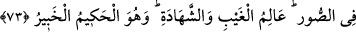

ALLAH YOLUNDAN
AYRILMAMAK
71. De ki: Allah’ı bırakıp da bize fayda veya zarar veremeyecek olan şeylere mi
tapalım? Allah bizi doğru yola ilettikten sonra şeytanların saptırıp şaşkın olarak
çöle düşürmek istedikleri, arkadaşlarının ise: “Bize gel!” diye doğru yola
çağırdıkları şaşkın kimse gibi gerisin geri (inkârcılığa) mı döndürüleceğiz? De ki:
Allah’ın hidayeti doğru yolun ta kendisidir. Bize âlemlerin Rabbine teslim olmamız
emredilmiştir.
72. “Namazı dosdoğru kılın ve Allah’tan korkun” (diye de emredildik). O,
huzuruna varıp toplanacağınız Allah’tır.
73. O, gökleri ve yeri hak (ve hikmet) ile yaratandır. “Ol!” dediği gün herşey
oluverir. O’nun sözü gerçektir. Sûr’a üflendiği gün de hükümranlık O’nundur.
Gizliyi ve açığı bilendir ve O, hikmet sahibidir, her şeyden haberdardır.
“De ki: Allah’ı bırakıp da bize fayda ve zarar veremeyen şeylere mi yalvaralım?”
Allah’a ibadeti bir tarafa bırakalım da ibadet ettiğimizde bize fayda vermeye, ibadeti
terk ettiğimiz taktirde bir zarar vermeye güçleri yetmeyen putlara mı ibadet edelim?
Oysa, fayda ve zarar vermeye kaadir olan yalnız Allah’dır.
“Ve Allah bizi doğru yola ilettikten sonra ökçelerimiz üzerinde (eski durumumuza)
döndürülüp” Yani, Allah bizi İslâm’a hidayet ettikten ve şirkden kurtardıktan sonra
saptıranın saptırmasıyla İslam’ı bırakıp da şirke mi dönelim?”
“Şeytanların ayartarak şaşkın bir halde çölde bıraktıkları, arkadaşlarının ise
“Bize gel!” diye doğru yola çağırdıkları kimse gibi (şaşkın bir duruma) mı düşelim?”
Yani, cinlerin azgınlarının ıssız bir yere götürüp yoldan çıkardıkları kimse gibi
ökçemiz üzere yolu kaybetmiş şaşkın bir kimse gibi geri mi döndürülelim? Bu yoldan